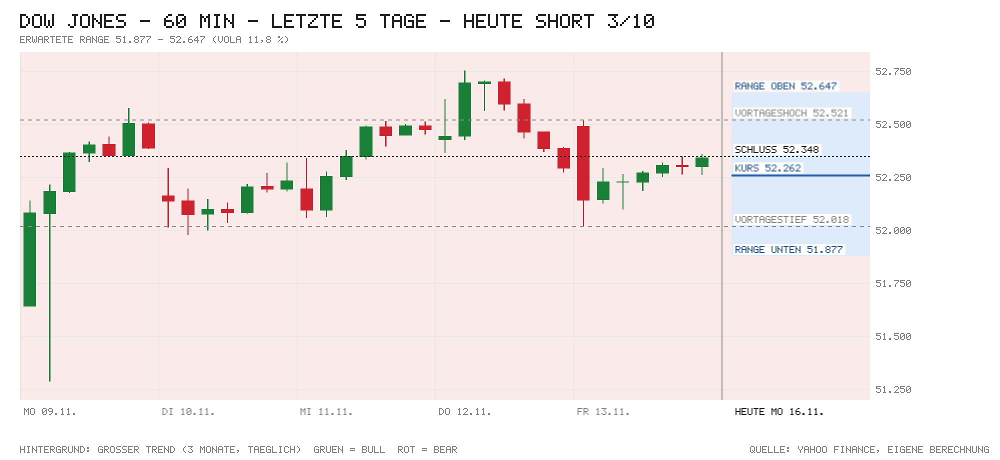

Tagesentscheidung ab 15:32 bis 22:00 Uhr
Für Short sprechen der Tech-Ausverkauf vor den Nvidia-Zahlen (Nasdaq 100 −1,58 %), der schwache Empire-State-Index (7,8 statt 17,6 erwartet), Goldman Sachs und Caterpillar (zusammen −176 Pkt.) und der große Trend auf Bear. Dagegen stehen die Umschichtung in defensive Werte (Amgen, UnitedHealth, McDonald’s, J&J), leicht fallende Renditen und um 2 % billigeres Öl. Darum hält sich der Dow deutlich besser als die Nasdaq. Das Bild ist knapp, daher nur 3/10.
- Kurs um 15:32
- 52.262
- Erwartete Range
- 51.877 – 52.647
- Eingepreist (Tagesoption)
- ±0,74 %
Einschätzung vom Kurs um 15:32 bis zum US-Schluss. Range = ±1 σ für die restliche Handelszeit aus der S&P-500-Tagesoption, auf den Dow umgerechnet (ca. 68 %). Keine Anlageberatung.
Chart

Signale
| Signal | Wirkung | Stand und Einordnung |
|---|---|---|
| Eröffnung & erste Minuten | Neutral | Eröffnung 52.267 (Lücke −0,15 %), jetzt 52.262 (−0,01 % seit Eröffnung), Hoch/Tief bisher 52.324/52.199. Kleine Lücke nach unten, seitdem seitwärts. |
| Schwergewichte heute | Gegenwind | Alle 30 Werte zusammen −36 Pkt. Goldman Sachs −96 und Caterpillar −80 gegen Amgen +45 und UnitedHealth +32. |
| US-Daten heute | Gegenwind | Empire State (Industrie New York) Ist 7,8 vs. Prognose 17,6 (zuvor 25,5). Deutlich schwächer, trifft Industriewerte. |
| Europa & Asien | Gegenwind | DAX −0,08 %, Euro Stoxx 50 −0,14 %. Über Nacht Nikkei −2,42 %, Shanghai −0,87 %, Hang Seng +0,49 %. Laut ING enttäuschten Chinas Oktober-Daten durchweg. |
| Zinserwartung | Gegenwind | Fed am 9.12.: 107 % für +25 Bp. (impl. 4,15 %), Januar weitere 71 %. Erhöhung voll eingepreist. |
| Renditen | Rückenwind | US 2J 4,84 %, 10J 5,13 % (−2 Bp. zum Vortag). Leicht fallend nach den schwachen Daten. |
| Kreditstress | Neutral | FRED n/v. Ersatz: HYG −0,01 %, LQD +0,16 %. Kein Stress. |
| Öl & Dollar | Neutral | WTI 87,16 USD (−1,58 %), Brent 93,78 USD (−2,15 %) helfen; EUR/USD 1,1014 (−0,32 %), der stärkere Dollar bremst Exportwerte. |
| Trend | Rückenwind | 52.262 knapp über dem 21-Tage-Schnitt (52.258), über dem 50-Tage- (51.974) und 200-Tage-Schnitt (50.757). Der große Trend steht seit 28.10. auf Bear und passt zu Short. |
| Positionierung | Neutral | CFTC-Daten heute n/v (Dienst antwortete nicht). |
| Unternehmensnachrichten | Gegenwind | Nvidia −2,0 % vor den Zahlen am 17.11. nach Schluss; Home Depot und Disney berichten morgen vorbörslich. Vorsicht vor Nvidia drückt Tech. |
| Profi-Sicht | Gegenwind | ING FX Daily fragt „Time for a break below 1.10 in EUR/USD?“: Der Dollar bleibt fest. |
| Termine im Fenster | Neutral | Fed Williams (15:05), Auktion 3-Monats-Bills (17:30), Rede Fed-Chef Warsh (18:00). Kein Zinsentscheid, Warsh kann aber bewegen. |
Dow-Werte heute
| Aktie | Heute | Beitrag |
|---|---|---|
| Goldman Sachs | −1,72 % | −96 Pkt. |
| Caterpillar | −2,19 % | −80 Pkt. |
| Amgen | +1,57 % | +45 Pkt. |
| UnitedHealth | +1,28 % | +32 Pkt. |
| Amazon | −1,70 % | −28 Pkt. |
| McDonald’s | +1,53 % | +25 Pkt. |
| Travelers | +0,95 % | +23 Pkt. |
| Johnson & Johnson | +1,25 % | +22 Pkt. |
| Summe aller 30 Werte | −36 Pkt. |
Beitrag = Kursänderung seit gestern ÷ Dow-Divisor (aus den Kursen berechnet, 0,16351). Laufende Kurse von Yahoo, bis zu 15 Minuten verzögert. Die Dow-Liste im Skript hat den Stand Nov. 2024.
Großer Trend (3-Monats-Momentum)
- Stand
- Bear
- Seit
- 28.10. (5 Wechsel in 3 Monaten)
- Schluss 13.11.
- −2,08 % vs. Zins +0,99 %
- Heute dreht es bei Schluss über
- 53.871 (jetzt −2,9 %)
Auch mit dem Kurs von jetzt bliebe das Signal Bear. Bull = Rendite der letzten 3 Monate über dem Geldmarktzins, Bear = darunter. Regel: Rendite der letzten 63 Handelstage (≈ 3 Monate) gegen die 13-Wochen-T-Bill (^IRX, jetzt 4,13 %), jeden Tag zum Schluss neu entschieden, Zeitrahmen Tageskerzen (nach Antonacci 2014, dort monatlich über 12 Monate; täglich entschieden dreht es öfter falsch). Keine Anlageberatung.
Bilanz der letzten Entscheidung
13.11.: Short mit 5/10 ab 52.216. Die Richtung war falsch: Schluss 52.348, −132 Punkte gegen die Einschätzung (Hoch 52.359, Tief 52.096). Die Range von ±300 wurde getroffen. Gesamt seit Start: 7 Einschätzungen, Richtung 43 % richtig, Summe −1.265 Punkte bis Schluss (Schnitt −181). Range bisher an 57 % der 7 Tage getroffen (Soll ca. 68 %).
Marktlage
| Markt | Stand | Veränderung |
|---|---|---|
| Dow Jones (Schluss 13.11.) | 52.347,55 | +0,10 % |
| Dow (Eröffnung heute) | 52.267,06 | −0,15 % |
| Dow (jetzt, Kurs zur Notiz 15:32) | 52.262 | −0,16 % |
| S&P 500 | 7.497,72 | −0,85 % |
| Nasdaq 100 | 27.503,61 | −1,58 % |
| US-Futures (S&P / Nasdaq) | 7.537,00 / 27.674,00 | −0,61 % / −1,29 % |
| DAX (aktuell) | 26.728,72 | −0,08 % |
| Euro Stoxx 50 (aktuell) | 6.377,82 | −0,14 % |
| EUR/USD | 1,1014 | −0,32 % |
| WTI (USD/Barrel) | 87,16 | −1,58 % |
| Brent (USD/Barrel) | 93,78 | −2,15 % |
| Gold (USD/Unze) | 3.866,40 | −0,51 % |
| VIX | 20,41 | +5,75 % |
| VXD (Schluss 13.11.) | 16,31 | +0,18 % |
Stände von 15:33 Uhr (Yahoo, bis 15 Min. verzögert). Fallendes Öl ist grün, ein fallender Euro (starker Dollar) und steigende Volatilität rot markiert. Der Schluss vom 13.11. ist gegen den 12.11. (52.297,09) gerechnet.
Anleihen & Zinsen
| Kennzahl | Stand | Veränderung |
|---|---|---|
| US-Treasury 2J (live) | 4,84 % | −4 Bp. (vs. 4,88 % offiziell 13.11.) |
| US-Treasury 10J (live) | 5,13 % | −2 Bp. (vs. 5,15 %) |
| Fed nächste Sitzung (9.12.) | 107 % für +25 Bp. (impl. 4,15 %) | Erhöhung voll eingepreist |
| Fed-Zielband | 3,75–4,00 % (EFFR 3,88 %) | zuletzt +25 Bp. am 17.9. |
| US-Hochzins (HYG, Ersatz) | 76,94 USD | −0,01 % heute |
| Investment Grade (LQD, Ersatz) | 102,97 USD | +0,16 % heute |
Die Risikoaufschläge von FRED lagen nicht vor, daher die Anleihe-ETFs HYG und LQD als Ersatz (nur Tagesveränderung, Wochenwert n/v). US-Live-Kurve Stand 15:33 Uhr. Offizielle 10J vor einer Woche: 4,86 %.
Termine heute (deutsche Zeit)
- 14:30 USA: Empire State Industrieindex – Ist 7,8 vs. Prognose 17,6 · zuvor 25,5
- 15:05 Rede Fed Williams (New York)
- 15:30 Eröffnung der Wall Street
- 17:30 USA: Auktion 3-Monats-Bills – zuletzt 4,060 %
- 18:00 Rede Fed-Chef Warsh
- 22:00 US-Börsenschluss. Keine Quartalszahlen von Dow-Werten heute; morgen Home Depot (EPS-Prognose 3,86 USD) und Disney (1,67 USD) vorbörslich, Nvidia nach Schluss (2,49 USD).
Nachrichten zu Dow-Werten
- Goldman Sachs: −1,72 % (−96 Pkt.), größter Bremser. Eine eigene Meldung fand sich nicht. Einschätzung (ohne Quelle): Banken leiden unter dem Risikoabbau in Tech und der Aussicht auf weitere Zinserhöhungen.
- Caterpillar: −2,19 % (−80 Pkt.), keine eigene Meldung gefunden. Einschätzung (ohne Quelle): Schwacher Empire-State-Index, schwache China-Daten und der feste Dollar treffen den teuersten Industriewert.
- Nvidia: −2,0 % (−20 Pkt.) vor den Quartalszahlen am 17.11. nach Schluss (EPS-Prognose 2,49 USD). Einschätzung: Bis dahin bleibt Tech nervös; die Zahlen sind das große Ereignis der Woche.
- Amgen, UnitedHealth, McDonald’s, J&J, P&G, Visa: zusammen +166 Pkt., keine eigenen Meldungen gefunden. Einschätzung (ohne Quelle): Umschichtung in defensive Werte, darum fällt der Dow viel weniger als die Nasdaq.
Profi-Sicht & Positionierung
- ING THINK: Das FX Daily „Time for a break below 1.10 in EUR/USD?“ hält einen weiter festen Dollar für möglich; dazu „China’s October domestic activity data disappoints across the board“. Die Seiten waren nicht abrufbar, die Einordnung stützt sich auf die Überschriften.
- Positionierung (COT): n/v, der CFTC-Dienst antwortete nicht.
Quellen
- Marktdaten (Skript
marktdaten.mjs): Yahoo Finance (Kurse, Dow-Werte, VXD, ^IRX), Nasdaq (Kalender, Quartalszahlen, Optionskette SPY), US-Live-Kurve, Bundesbank, U.S. Treasury, Fed-Pfad über Amber Terminal, ING THINK - ING THINK: FX Daily – Time for a break below 1.10 in EUR/USD?
- ING THINK: China’s October domestic activity data disappoints across the board